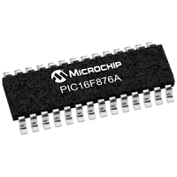

NOTE: This post is available in Spanish only. Please use a software translator.
He dejado de usar microcontroladores PIC por los motivos explicados en este post; Pero voy a dedicar este post para tratar y explicar un programa sencillo escrito en ensamblador para el PIC16F876A.
El objetivo es el siguiente:
Se desea usar el microcontrolador para llevar a cabo la conversión analógica-digital de una tensión variable (un LDR o un potenciómetro por ejemplo) y transmitir el resultado usando la UART. Además debe ser posible recibir por la UART un byte que debe alterar la configuración del Conversor Análogo Digital (DAC) interno del microcontrolador para, por ejemplo, cambiar el canal de entrada de la señal analógica o modificar la velocidad del reloj de conversión.
El código ha sido ensamblado con el ensamblador de GNU gpasm del juego de herramientas gputils, pero debería ser perfectamente compatible con las herramientas MPLAB de Microchip que no uso porque odio los IDEs. En cualquier caso la explicación y el 99% del código debería ser útil sin modificación alguna.
Este post se deberá leer en paralelo junto con el datasheet del microcontrolador en cuestión PIC16F876A que se puede encontrar aquí: http://ww1.microchip.com/downloads/en/DeviceDoc/39582C.pdf
Además tener en cuenta los pines del microcontrolador:
El código completo se encuentra aquí.
Declaración de registros y variables
Empezamos examinando y explicando el código:
list p=16f876ALa primera linea le dirá al ensamblador los mapas de memoria que el enlazador deberá usar (el microcontrolador que estamos usando).
; Declaración de direcciones de memoria
; Datasheet pagina 17, figura 2-3
PORTA EQU 0x05
PORTB EQU 0x06
TRISA EQU H'85'
TRISB EQU H'86'
TRISC EQU H'87'
RP0 EQU H'05'
RP1 EQU H'06'
STATUS EQU H'03'
DATO EQU H'21'
ADCON0 EQU H'1F'
ADCON1 EQU H'9F'
PIR1 EQU H'0C'
INTCON EQU H'0B'
PIE1 EQU H'8C'
ADRESH EQU H'1E'
ADRESL EQU H'9E'
SPBRG EQU H'99'
TXSTA EQU H'98'
RCSTA EQU H'18'
TXREG EQU H'19'
RCREG EQU H'1A'
OPTION_REG EQU H'81'
IRP EQU H'07'En el Datasheet, pagina 17, figura 2-3 se puede ver el mapa completo de memoria del microcontrolador. En estas lineas declaramos los nombres y direcciones (en hexadecimal) de los mismos para usarlos en el código con más facilidad. La palabra EQU asigna el nombre de la izquierda al valor de la derecha. Para declarar un valor hexadecimal se usa el prefijo 0x.
Inicialización y configuración
INIT
org 0
; Selección BANCO 1
; Datasheet pagina 16, sección 2.2
BSF STATUS,RP0
BCF STATUS,RP1La palabra INIT es la declaración de una etiqueta y se puede cambiar por cualquier palabra que se desee, es el nombre con el cual nos vamos a referir a esta sección de código desde otras partes del programa y que podremos invocar usando dicha etiqueta.
La directiva org 0 indica al enlazador que el código a continuación deberá ser colocado desde la dirección 0 de la memoria de programa.
Las instrucciones BSF STATUS,RP0 y BCF STATUS,RP1 hacen un cambio al banco de memoria 1. La memoria del microcontrolador está dividida en bancos y es necesario cambiarnos al banco donde reside el registro que queremos modificar en cada momento, con lo cual este par de instrucciones se encuentra con usar para cambiar los bancos de memoria.
Configuración de los puertos de entrada/salida
;;; Configuración de puertos IO
;;; Datasheet pagina 41
; El puerto A es de entrada
MOVLW B'00111111'
MOVWF TRISA
; El puerto B es de entrada
MOVLW B'00000000'
MOVWF TRISB
; Puerto C: pin TX es salida, pin RX es entrada
MOVLW B'10001111'
MOVWF TRISCLa instrucción MOVLW se usa para mover un valor literal al registro de trabajo W.
La instrucción MOVWF se usa para mover el valor que se encuentra en el registro de trabajo W a un registro.
De esta forma para colocar un valor arbitrario en un registro es necesario colocarlo primero en el registro de trabajo W usando la instrucción MOVLW y luego moverlo al registro deseado con la instrucción MOVWF.
Para indicar que el valor usado es binario se usa como prefijo una B.
El puerto A contiene los pines del conversor ADC por lo que se configuran como entradas. El puerto B se configura como salida para, opcionalmente, colocar LEDs que sirvan como indicadores visuales. El puerto C contiene los pines TX y RX usados para la comunicación UART con lo cual se configuran para salida y entrada respectivamente.
Configuración del conversor ADC
;;; Configuración de puerto ADC
; Todas las entradas son analógicas
; Datasheet pagina 128
MOVLW B'10000000'
MOVWF ADCON1La configuración del conversor ADC será recibida usando la comunicación UART, sin embargo es necesario configurar de antemano que pines serán analógicos y que pines serán digitales. No usaremos pines digitales en este puerto, así que se configuran todos como analógicos según la tabla de la pagina 128 del Datasheet.
Configuración de la UART
La comunicación serial UART puede usarse para comunicar el microcontrolador con una computadora u otro dispositivo como un modulo bluetooth que a su vez se puede usar para comunicar con un teléfono inteligente. El dispositivo con el que se comunique es irrelevante para este post y el código es el mismo en cualquier caso.
Nótese que los registros que se configuran se encuentran en bancos distintos con lo cual es necesario hacer el cambio de banco en cada paso.
;;; Configuración UART
; Banco 1
BSF STATUS,RP0
BCF STATUS,RP1
; 19200 Baudios
; Datasheet pagina 114, tabla 10-4
MOVLW .12
MOVWF SPBRGEl registro SPBRG o “Generador de baudios” recibe un valor (listado en la tabla) dependiendo de la velocidad a la cual nos queremos comunicar, de la frecuencia a la que se use el microcontrolador y el porcentaje de error que estamos dispuestos a tolerar en la comunicación. Dada la frecuencia de un reloj de 4Mhz usado y la necesidad de una comunicación a 19200 Baudios, la tabla indica usar un valor decimal de 12. Para indicar que el valor usado es decimal se usa como prefijo un punto ..
; Registro de transmisión
MOVLW B'10100100'
MOVWF TXSTAEl registro TXSTA de la pagina 111 se configura con los valores adecuados para configurar una comunicación de 8 bits de alta velocidad, asíncrona y para activar los mecanismos de transmisión.
; Banco 0
BCF STATUS,RP0
BCF STATUS,RP1
; Registro de recepción
MOVLW B'10010000'
MOVWF RCSTA
BSF RCSTA,4El registro RCSTA (en el banco 0) de la pagina 112 se configura para una comunicación de 8 bits, asíncrona y se activan los mecanismos de recepción.
Programa principal
El programa principal deberá esperar a que un byte para configurar el conversor ADC llegue por la UART, tomar un valor de tensión y llevar a cabo la conversión para finalmente transmitir el resultado por la UART enviando primero el byte bajo ADRESL y luego el byte alto ADRESH.
Configuración
;;; Esperar primer byte de configuración
ESPERAR_CONFIG
BTFSS PIR1,5
GOTO ESPERAR_CONFIGEl pin numero 5 del registro PIR1 indicará que un dato ha llegado por la UART.
La instrucción BTFSS verificará el bit numero 5 del registro PIR1 y se saltará la siguiente instrucción si el bit es igual a 1. De esta forma mientras no llegue el dato necesario la instrucción GOTO se ejecuta y el microcontrolador se queda en un bucle, pero cuando un dato es recibido la instrucción GOTO es saltada y el programa puede continuar.
; Colocar byte recibido en la configuración ADCON0 del conversor ADC
BCF STATUS,RP0
BCF STATUS,RP1
MOVF RCREG,W
MOVWF ADCON0
; Vaciar el bit de recepción
BCF PIR1,6El registro RCREG contiene el dato recibido por la UART, el cual se coloca en el registro de trabajo W para luego colocarlo en el registro de configuración ADCON0 del conversor ADC. Así el conversor quedará configurado con el canal y velocidad que se haya indicado en el dato que recibió y se puede proceder a la conversión. Usando la instrucción BCF se vacía el contenido del bit numero 6 del registro PIR1 para indicar que hemos leído el dato recibido.
Conversión
;;; Esperar tiempo de adquisición e iniciar conversión
CONVERTIR
; Instrucciones de espera
NOP
NOP
NOP
NOP
NOPAntes de realizar la conversión es necesario esperar un tiempo para que el microcontrolador pueda recoger el valor de tensión en el pin, según la pagina 129 del Datasheet. Se puede lograr esto usando la instrucción NOP, aunque sería más adecuado usar un bucle que espere un tiempo más prudente, pero se mantiene de esta forma por simplicidad.
; Activar conversor
BSF ADCON0,2Activando el bit numero 2 del registro ADCON0 usando la instrucción BSF inicia la conversión.
ESPERAR_CONVERSION
BTFSS PIR1,6
GOTO ESPERAR_CONVERSION
BCF PIR1,6La conversión toma tiempo, por lo que se entra en un bucle hasta que el bit numero 6 del registro PIR1 indique que se ha finalizado.
Transmitir el resultado
; Transmitir el resultado mediante la UART
TRANSMITIR_RESULTADO
BSF STATUS,RP0
BCF STATUS,RP1
; Transmitir byte bajo del resultado (ADRESL)
MOVF ADRESL,W
BCF STATUS,RP0
BCF STATUS,RP1
MOVWF TXREG
BSF STATUS,RP0
BCF STATUS,RP1El resultado de la conversión se encuetra repartido en dos bytes: ADRESL y ADRESH.
Colocamos el byte ADRESL en el registro de trabajo W para luego colocarlo en el registro TXREG lo cual causará que sea transmitido usando al UART.
; Esperar que el primer byte se transmita
ESPERAR_1
BTFSS TXSTA,1
GOTO ESPERAR_1
BCF STATUS,RP0
BCF STATUS,RP1
; Transmitir byte alto del resultado (ADRESH)
MOVF ADRESH,W
MOVWF TXREG
BSF STATUS,RP0
BCF STATUS,RP1
; Esperar que el segundo byte se transmita
ESPERAR_2
BTFSS TXSTA,1
GOTO ESPERAR_2
BCF TXSTA,1El bit numero 1 del registro TXSTA indica que el dato se ha transmitido.
Esperamos en un bucle hasta que el byte bajo termine de ser transmitido y podemos repetirlo para el byte alto.
GOTO CONVERTIR
ENDFinalmente se salta a la etiqueta CONVERTIR para convertir y transmitir datos infinitamente. El programa se termina con la directiva END.